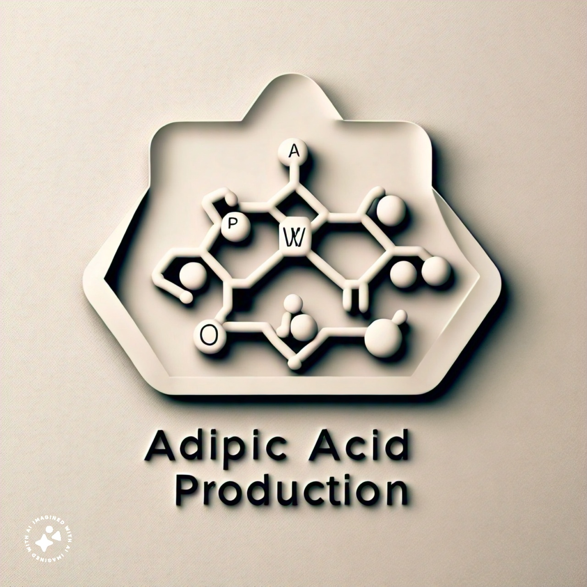
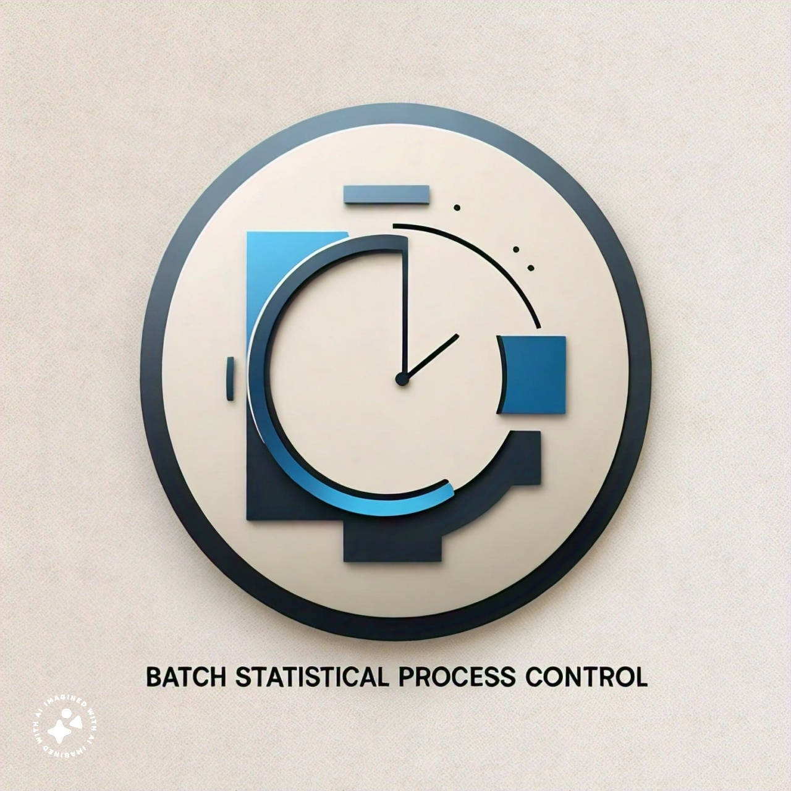

Developed a Python script to simulate and compare the performance of g batch, batch with inhibition, CSTR, CSTR with recycle, and fed batch reactor type.
Ran numerous simulations with timed data and dilution rates, generating data on product, biomass, and substrate concentration. Compared and contrasted the productivity and yield of each reactor type based on the simulation results.
Identified and reported the CSTR with recycle as the optimal reactor type based on achieving the highest productivity (162.36 g/L/hr) and a good yield (YP/S of 0.82).
Leveraged StrainDesign in Python to model and optimize the Riboflavin production pathway and conducted a
comparative study between MOMA, ROOM, and FBA processes, revealing an increase in Riboflavin production
(0.045 -> 0.1) and slight reduction in biomass production (0.145 -> 0.0869), also a minor difference in biomass value
(4.3E-14). Visualized the bioprocess data to assess the impact of optimization on Riboflavin production, biomass, and other relavent parameters.
Interpreted the results of the comparative study to identify the most efficient process (MOMA).
Identified essential reactions in the metabolism network of 5 different E.coli strands and deleted the remaining unrequired ones.
Coded the whole function separately and compared it to the built-in version.
Addressed limitations in existing function leading to increased FVA accuracy 0.05%. Developed a novel approach to improve the accuracy of FVA

Gathered different production designs (growth-coupled and non-growth
coupled) for high-volume, low-cost, and flexible/scalable scenarios to understand production feasibility and tradeoffs. Optimize metabolic pathways to result in 6.50 adipic acid per excretion with an 82% growth rate.
Assessed the impact of model modifications on adipic acid production, growth rate, and other relevant parameters.
Interpreted the results to identify the best production design for different manufacturing goals.
Developed and fine-tuned multiple machine learning models in PySpark and
identified the L1 Logistic Regression model as the best, achieving 96% accuracy for both annual and monthly bank
transaction data, thus selecting optimised models for further evaluation.Modelled bank transaction data to predict customer behaviour. Evaluated model performance
using accuracy metrics and assessed model effectiveness and identified areas of improvement.
Used Advanced Visualization Techniques with Interactive components for previously developed COViD'19 Predictive Models for easy interaction and filters.
Apply machine learning, develop, and evaluate models for predicting critical temperature of a supercondector.
Programmed 3 predictive models, linear regressive, full batch GD and a mini batch GD using machine learning algorithms using available datasets. Achieved 17.84 RMSE and thus achived an.
Apply machine learning, develop, and evaluate models for a diabetes problem.
Programmed a predictive model using machine learning algorithms and statistical diabetes datasets. Achieved 77%
accuracy in diagnosing diabetes patients.
Applied Principal Component Analysis (PCA) and Singular Value Decomposition (SVD) (Dimensionality reduction techniques) to compress the 733-feature, 283-
sample COVID-19 dataset. Achieved 99% variance retention with just 8 principal components, effectively capturing
key information in a smaller representation.Reconstructed the
data using both PCA and SVD and visualized the results. Concluded that SVD was more effective (98% accuracy)
without data standardization.
Create and compare different ML models on Forest Data trying to identify
different anomalies. Constructed, tested, and evaluated 50 Gaussian Mixture Models with varying features.
Attained an optimal F1 score of 0.94, thus discovering 94% of all irregularities present in the dataset, preparing a
clean model for further processing.

Developed a Multivariate Statistical Process Control Monitoring
system for a yeast production facility employing statistical modelling and process control techniques. Reduce data
dimensionality to increase storage efficiency and identify key features exploited PCA to compress 11 variables into
5 with 99% variance. Discovered the best process.
Performed exploratory data analysis on suspicious phone activity for a criminal
investigation team, showcasing the ability to analyse complex data for hidden patterns and insights. Discovered a
route to triangulate a criminal transaction from 340 records
Exploring Data from a Pottery manufacturing company and selecting which site is one of the best to select for sourcing it's raw material from.
A time seris analysis of gambling continuously for 1000 days. Predictions showed that it will eventually lead to a loss even after you have won initially.
.jpeg)
Apply machine learning for marketing applications. Created 6 predictive models
to forecast client responses to promotional campaigns on a Kaggle dataset. Used both monthly and annual features
for different data perspectives. Identified Random Forest and Simple Tree models as the best with 81% and 70%
accuracy, respectively, after model comparison. Developed and optimized model performance for a promotional campaign
dataset, increasing accuracy by 6% with larger sample sizes (50 to 300,000) also achieved an AUC of 0.62.
Assess accuracy of a developed model by testing the NIR datset and how they compare to the actual feasiblity of the whole process.